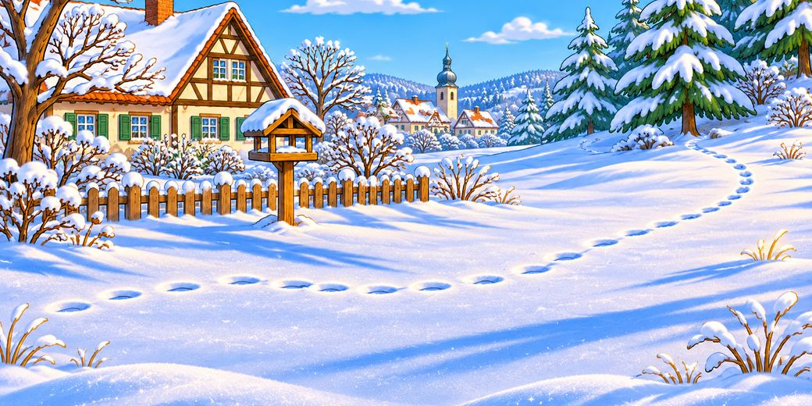

<!doctype html>
<html lang="de">
<head>
<meta charset="utf-8">
<meta name="viewport" content="width=device-width,initial-scale=1,viewport-fit=cover">
<title>Fährtenleser – Wer war das im Schnee? · Bio Mibaso</title>
<meta name="description" content="Ein Spurenspiel für Klasse 5/6: Folge den Fährten im Schnee, bevor es dunkel wird. Trittsiegel, Fraßspuren und Verstecke von Eichhörnchen, Fuchs und Feldhase. Ohne Anmeldung.">
<meta name="theme-color" content="#233D5C">
<link rel="icon" href="../assets/icon.svg">
<link rel="apple-touch-icon" href="../assets/apple-touch-icon.png">
<style>
/* Fährtenleser – Farben und Schrift wie die Forscherpässe von Fauna Mibaso */
:root{
  --blau:#233D5C; --blau-tief:#1a2f47; --blau-mittel:#33587c; --blau-hell:#bcd0e2;
  --creme:#F7F3E8; --creme-tief:#EEE7D5; --tile:#FFFFFF;
  --honig:#C28A3A; --honig-tief:#a9762c;
  --ink:#1c2e42; --ink-soft:#5d6b78; --linie:#d9d2c1;
  --ok:#2f6a45; --bad:#B23B2E;
  --serif:Georgia,"Times New Roman",serif;
  --sans:-apple-system,BlinkMacSystemFont,"Segoe UI",Roboto,Helvetica,Arial,sans-serif;
  color-scheme:light;
}
*{box-sizing:border-box;-webkit-tap-highlight-color:transparent}
html{background:var(--blau-tief);-webkit-text-size-adjust:100%}
body{margin:0;background:var(--creme);color:var(--ink);font-family:var(--serif);font-size:18px;line-height:1.55;min-height:100vh}
a{color:var(--blau)}
button{font:inherit;color:inherit}
:focus-visible{outline:3px solid var(--honig);outline-offset:2px}
h1,h2,h3{font-weight:normal;margin:0;text-wrap:balance;line-height:1.2}
p{margin:0}
.huelle{max-width:720px;margin:0 auto;padding-left:max(16px,env(safe-area-inset-left,0px));padding-right:max(16px,env(safe-area-inset-right,0px));padding-bottom:40px}
section{padding-top:24px;display:grid;gap:14px}
.app-head{background:linear-gradient(180deg,var(--blau-tief) 0%,var(--blau-mittel) 100%);color:var(--creme);text-align:center;
  padding:calc(env(safe-area-inset-top,0px) + 22px) max(20px,env(safe-area-inset-right,0px)) 24px;border-bottom:4px double var(--blau-hell);position:relative}
.app-head .zurueck-kopf{position:absolute;left:12px;top:calc(env(safe-area-inset-top,0px) + 10px);color:#dce8f3;font-family:var(--sans);font-size:14px;text-decoration:none;padding:6px}
.app-head .logo{font-size:40px;line-height:1;margin:14px 0 6px;letter-spacing:6px}
.app-head h1{font-size:clamp(30px,9vw,44px);letter-spacing:.02em}
.app-head .untertitel{font-style:italic;color:#dce8f3;margin-top:8px;font-size:clamp(14px,3.8vw,17px)}
.eyebrow{font-family:var(--sans);font-size:12px;letter-spacing:.12em;text-transform:uppercase;color:var(--ink-soft)}
.lead{font-size:19px}
.klein{font-size:15px;color:var(--ink-soft)}
.h-blau{color:var(--blau);font-size:26px} .h-honig{color:var(--honig-tief);font-size:22px}
ul.clean{margin:0;padding-left:1.2em;display:grid;gap:5px}
.knopf{display:inline-block;border:1px solid var(--blau);background:var(--tile);color:var(--blau);border-radius:12px;padding:11px 18px;font-family:var(--sans);font-size:16px;cursor:pointer;text-decoration:none;text-align:center}
.knopf.prim{background:var(--blau);color:#fff;box-shadow:0 2px 0 var(--blau-tief)}
.knopf.honig{background:var(--honig);border-color:var(--honig);color:#fff;box-shadow:0 2px 0 #8a5a17}
.knopfreihe{display:flex;flex-wrap:wrap;gap:8px;justify-content:center}
.fuss{margin-top:34px;padding-top:16px;border-top:1px solid var(--linie);font-family:var(--sans);font-size:13px;color:var(--ink-soft);text-align:center;display:grid;gap:6px}
details.lehrer{background:var(--tile);border:1px solid var(--linie);border-radius:14px;padding:12px 16px;font-size:16px}
details.lehrer summary{cursor:pointer;font-family:var(--sans);font-size:15px;color:var(--blau);font-weight:bold}
details.lehrer .grid{display:grid;gap:10px;padding-top:10px}
.regeln{display:grid;gap:8px;font-family:var(--sans);font-size:15px}
.regel{display:grid;grid-template-columns:40px 1fr;gap:12px;align-items:center;background:var(--tile);border:1px solid var(--linie);border-radius:12px;padding:10px 12px}
.regel .e{font-size:26px;text-align:center;line-height:1}
.regel b{color:var(--blau)}
.level{display:grid;gap:12px}
.lv{display:grid;grid-template-columns:64px 1fr;gap:14px;align-items:center;background:var(--tile);border:2px solid var(--blau-hell);border-radius:16px;padding:12px;text-align:left;cursor:pointer;width:100%;font-family:var(--serif)}
.lv .em{font-size:44px;text-align:center;line-height:1}
.lv .nr{font-family:var(--sans);font-size:12px;letter-spacing:.12em;text-transform:uppercase;color:var(--honig-tief);font-weight:bold}
.lv .nm{font-size:23px;color:var(--blau);display:block;line-height:1.2}
.lv .mo{font-size:15px;color:var(--ink-soft);display:block;line-height:1.35;margin-top:2px}
.lv .st{font-family:var(--sans);font-size:14px;color:var(--ink);display:block;margin-top:6px}
@media (hover:hover){.lv:not(:disabled):hover{border-color:var(--blau);box-shadow:0 4px 14px rgba(35,61,92,.14)}}
.lv:disabled{cursor:default;opacity:.6;border-style:dashed}
.lv:disabled .em{filter:grayscale(1)}
.stern-leer{opacity:.22;filter:grayscale(1)}

/* Spiel */
.spielkopf{position:sticky;top:0;z-index:6;background:var(--creme);border-bottom:1px solid var(--linie);
  padding:calc(env(safe-area-inset-top,0px) + 8px) max(12px,env(safe-area-inset-right,0px)) 8px max(12px,env(safe-area-inset-left,0px))}
.spielkopf .innen{max-width:720px;margin:0 auto;display:grid;gap:8px}
.sk-zeile{display:flex;align-items:center;justify-content:space-between;gap:10px;font-family:var(--sans);font-size:14px}
.sk-zeile a{color:var(--blau);text-decoration:none;padding:4px 2px}
.sk-zeile b{color:var(--blau)}
.licht{display:grid;grid-template-columns:auto 1fr auto;gap:10px;align-items:center;font-family:var(--sans);font-size:13px;color:var(--ink-soft)}
.licht b{color:var(--ink);font-variant-numeric:tabular-nums}
.stunden{display:grid;grid-template-columns:repeat(10,1fr);gap:3px}
.stunden i{height:12px;border-radius:999px;background:#f2c56b;border:1px solid #c79a3d;transition:background-color .4s}
.stunden i.um{background:#33475f;border-color:#33475f}
.stunden.knapp i:not(.um){background:#e58a5b;border-color:#b85f33}
.karte{background:var(--tile);border:1px solid var(--linie);border-radius:18px;overflow:hidden;animation:rein .35s ease-out}
@keyframes rein{from{transform:translateY(14px);opacity:0}to{transform:none;opacity:1}}
.land{display:block;width:100%;height:auto}
.ende > .land{max-width:460px;margin:0 auto;border-radius:0 0 14px 14px}
@media (min-width:600px){.oben{display:grid;grid-template-columns:300px 1fr;align-items:center}.oben .land{border-radius:0 0 14px 0}.oben .k-text{padding-top:10px;padding-bottom:10px}}
.k-text{padding:12px 16px 4px;display:grid;gap:6px}
.k-text h2{font-size:24px;color:var(--blau)}
.wahl{display:grid;gap:8px;padding:8px 16px 12px}
.wahl button{text-align:left;background:var(--creme);border:2px solid var(--blau-hell);border-radius:12px;padding:12px 14px;font-family:var(--sans);font-size:16px;line-height:1.35;cursor:pointer;color:var(--ink);touch-action:manipulation}
@media (hover:hover){.wahl button:not(:disabled):hover{border-color:var(--blau);background:#fff}}
.wahl button:disabled{cursor:default;opacity:.45}
.wahl button.gewaehlt{opacity:1;border-color:var(--ink);background:#fff;font-weight:bold}
.wahl.spuren{grid-template-columns:repeat(3,1fr);max-width:400px;width:100%;margin:0 auto}
.wahl.spuren button{padding:0;overflow:hidden;text-align:center;display:grid}
.wahl.spuren svg{display:block;width:100%;height:auto;background:#fbfdff}
.wahl.spuren .bst{font-weight:bold;font-size:15px;padding:5px 0 6px;color:var(--blau);border-top:1px solid var(--linie)}
.richtung{font-family:var(--sans);font-size:13px;color:var(--ink-soft);text-align:center;padding:4px 16px 0}
.folge{margin:0 16px 12px;border-radius:14px;padding:12px 14px;display:grid;gap:8px;font-family:var(--sans);font-size:15px;line-height:1.45;animation:rein .3s ease-out}
.folge.r2{background:#e3f0e7;border:1px solid #b9d8c4}
.folge.r0{background:#f7e3df;border:1px solid #e6bdb5}
.folge.schnee{background:#e6eef6;border:1px solid #bcd0e2}
.folge .urteil{font-weight:bold;font-size:16px}
.folge.r2 .urteil{color:var(--ok)} .folge.r0 .urteil{color:var(--bad)} .folge.schnee .urteil{color:var(--blau)}
.folge .gross{font-size:38px;line-height:1}
.chip{display:inline-block;margin-left:6px;background:rgba(255,255,255,.75);border-radius:999px;padding:3px 10px;font-weight:bold;font-size:14px;color:var(--bad);width:max-content}
.weiter{display:flex;justify-content:center;padding:0 16px 18px}
.ende{background:var(--tile);border:1px solid var(--linie);border-radius:18px;overflow:hidden;text-align:center;display:grid;gap:10px;padding-bottom:20px}
.ende > *{margin-left:16px;margin-right:16px}
.ende > .land{margin:0}
.fundbild,.titelbild{display:block;width:100%;height:auto;aspect-ratio:2/1;object-fit:cover}
.ende > .fundbild{margin:0}
.titelbild{border-radius:16px;border:1px solid var(--linie)}
.ende h2{font-size:28px;color:var(--blau)}
.ende .gross{font-size:44px;letter-spacing:6px;line-height:1}
.merk{display:grid;gap:8px;font-family:var(--sans);font-size:15px;text-align:left}
.merk div{background:var(--tile);border:1px solid var(--linie);border-left:4px solid var(--honig);border-radius:10px;padding:10px 12px;line-height:1.45}
.konffeld{position:fixed;inset:0;pointer-events:none;z-index:70;overflow:hidden}
.konf{position:absolute;top:-40px;font-size:22px;animation:fall 3.6s linear forwards}
@keyframes fall{to{transform:translateY(110vh) rotate(540deg);opacity:.2}}
.flocken{position:fixed;inset:0;pointer-events:none;z-index:60;overflow:hidden}
.flocke{position:absolute;top:-30px;color:#fff;text-shadow:0 0 3px #7f95ad;animation:fall 2.6s linear forwards}
@media (max-width:420px){body{font-size:17px}}
@media (prefers-reduced-motion:reduce){*{animation:none!important;transition:none!important}}
</style>
<!-- Besucherzählung (GoatCounter, ohne Cookies) -->
<script>window.goatcounter={path:function(p){return location.host+p}};</script><script data-goatcounter="https://mibaso.goatcounter.com/count" async src="//gc.zgo.at/count.js"></script>
</head>
<body>
<div id="app"></div>

<script>
"use strict";
/* ============ Trittsiegel und Spuren (alles gezeichnet, Laufrichtung nach oben) ============ */
const g = (x, y, s, inhalt, dreh) => `<g transform="translate(${x} ${y})${dreh ? ` rotate(${dreh})` : ""} scale(${s})">${inhalt}</g>`;
const kralle = (x, y) => `<ellipse cx="${x}" cy="${y}" rx=".8" ry="1.5"/>`;
const SIEGEL = {
  // schmal und länglich, die mittleren Zehen weit vorn, mit Krallen
  fuchs: `<ellipse cx="0" cy="5.5" rx="4" ry="4.4"/><ellipse cx="-4.4" cy="-1.5" rx="1.9" ry="3.1"/><ellipse cx="4.4" cy="-1.5" rx="1.9" ry="3.1"/><ellipse cx="-1.8" cy="-8" rx="1.8" ry="3.1"/><ellipse cx="1.8" cy="-8" rx="1.8" ry="3.1"/>${kralle(-1.9, -12.6)}${kralle(1.9, -12.6)}${kralle(-5, -6)}${kralle(5, -6)}`,
  // rundlich, Zehen gespreizt, mit Krallen
  hund: `<ellipse cx="0" cy="5" rx="6.3" ry="5.2"/><ellipse cx="-7.2" cy="-2.6" rx="2.5" ry="3.3" transform="rotate(-24 -7.2 -2.6)"/><ellipse cx="7.2" cy="-2.6" rx="2.5" ry="3.3" transform="rotate(24 7.2 -2.6)"/><ellipse cx="-2.9" cy="-6.6" rx="2.5" ry="3.3"/><ellipse cx="2.9" cy="-6.6" rx="2.5" ry="3.3"/>${kralle(-3.2, -11.6)}${kralle(3.2, -11.6)}${kralle(-9.6, -6.6)}${kralle(9.6, -6.6)}`,
  // rund, ohne Krallen
  katze: `<ellipse cx="0" cy="4.5" rx="5.4" ry="4.6"/><circle cx="-5.6" cy="-2.6" r="2.4"/><circle cx="5.6" cy="-2.6" r="2.4"/><circle cx="-2.2" cy="-6" r="2.4"/><circle cx="2.2" cy="-6" r="2.4"/>`,
  reh: `<path d="M-1 9 Q-7 2 -3.6 -9 Q-1 -5 -1 9 Z"/><path d="M1 9 Q7 2 3.6 -9 Q1 -5 1 9 Z"/>`,
  // breiter Huf, dahinter seitlich die beiden Afterklauen
  sau: `<path d="M-1.2 9 Q-10 2 -5 -10 Q-1.2 -5 -1.2 9 Z"/><path d="M1.2 9 Q10 2 5 -10 Q1.2 -5 1.2 9 Z"/><ellipse cx="-8.4" cy="12" rx="2" ry="3" transform="rotate(-25 -8.4 12)"/><ellipse cx="8.4" cy="12" rx="2" ry="3" transform="rotate(25 8.4 12)"/>`,
  // Hüpfgruppe Hase/Kaninchen: Hinterläufe vorn nebeneinander, Vorderpfoten dahinter hintereinander
  hase: `<ellipse cx="-8" cy="-12" rx="4.2" ry="10" transform="rotate(-8 -8 -12)"/><ellipse cx="8" cy="-12" rx="4.2" ry="10" transform="rotate(8 8 -12)"/><ellipse cx="-1" cy="9" rx="3.6" ry="4.6"/><ellipse cx="2" cy="21" rx="3.6" ry="4.6"/>`,
  // Hüpfgruppe Eichhörnchen: Vorderpfoten nebeneinander
  eich: `<ellipse cx="-8" cy="-6" rx="3.2" ry="6.6" transform="rotate(-14 -8 -6)"/><ellipse cx="8" cy="-6" rx="3.2" ry="6.6" transform="rotate(14 8 -6)"/><ellipse cx="-3.6" cy="7" rx="2.6" ry="3.2"/><ellipse cx="3.6" cy="7" rx="2.6" ry="3.2"/>`,
  vogel: `<g fill="none" stroke-width="2.2" stroke-linecap="round"><path d="M0 7 V-7 M0 -2 L-6 -9 M0 -2 L6 -9 M0 7 V12"/></g>`,
  maus: `<circle cx="-3" cy="0" r="1.7"/><circle cx="3" cy="0" r="1.7"/><circle cx="-2" cy="5" r="1.3"/><circle cx="2" cy="5" r="1.3"/>`
};
const reihe = (n, fn) => Array.from({ length: n }, (_, i) => fn(i)).join("");
const SPUR = {
  fuchs: () => reihe(5, i => g(50 + (i % 2 ? 1.5 : -1.5), 150 - i * 32, 1.3, SIEGEL.fuchs)),
  hund: () => reihe(5, i => g(50 + (i % 2 ? 14 : -14) + [0, 4, -3, 6, -5][i], 150 - i * 32, 1.15, SIEGEL.hund, [-12, 14, -6, 18, -15][i])),
  katze: () => reihe(5, i => g(50 + (i % 2 ? 6 : -6), 150 - i * 32, 1.35, SIEGEL.katze)),
  reh: () => reihe(5, i => g(50 + (i % 2 ? 6 : -6), 150 - i * 31, 1, SIEGEL.reh)),
  sau: () => reihe(5, i => g(50 + (i % 2 ? 9 : -9), 146 - i * 31, 1.05, SIEGEL.sau)),
  hase: () => g(50, 128, 1.05, SIEGEL.hase) + g(50, 52, 1.05, SIEGEL.hase),
  kaninchen: () => reihe(3, i => g(50, 140 - i * 50, .6, SIEGEL.hase)),
  eich: () => reihe(3, i => g(50, 142 - i * 52, 1, SIEGEL.eich)),
  marder: () => reihe(4, i => g(44, 150 - i * 40, .7, SIEGEL.katze) + g(57, 142 - i * 40, .7, SIEGEL.katze)),
  maus: () => `<path d="M50 162 Q46 120 51 84 T50 10" fill="none" stroke-width="1.3"/>` + reihe(8, i => g(50 + (i % 2 ? 1 : -1), 156 - i * 20, 1, SIEGEL.maus)),
  vogel: () => reihe(4, i => g(40, 150 - i * 40, 1, SIEGEL.vogel) + g(60, 150 - i * 40, 1, SIEGEL.vogel)),
  // einzelne Abdrücke in Großaufnahme
  fuchsGross: () => g(50, 92, 4.4, SIEGEL.fuchs),
  hundGross: () => g(50, 90, 3.7, SIEGEL.hund),
  katzeGross: () => g(50, 88, 4.6, SIEGEL.katze)
};
const spurSVG = art => `<svg viewBox="0 6 100 158" role="img" aria-label="Spur im Schnee"><rect width="100" height="170" fill="#fbfdff"/><g fill="#8fa3b6" stroke="#8fa3b6" stroke-width="0">${SPUR[art]()}</g></svg>`;

/* ============ Die Fälle ============
   Jede Gabelung: x = Lage und Frage, k = Merksatz (kommt ins Notizbuch),
   w = Antworten: { spur | l, ok } – falsche Antworten haben em + f (wohin die falsche Fährte führt). */
const STUNDEN = 10;
const FAELLE = [
  { id: "eich", em: "🐿️", bild: "../images/faehrte/eich.jpg", titel: "Der Nussknacker", motto: "Unter dem Futterhaus liegen aufgeknackte Nüsse.", tier: "ein Eichhörnchen",
    fund: "Oben in der Astgabel sitzt es vor seinem Kugelnest, dem Kobel – und schimpft auf dich herunter.",
    weg: [[56, 152], [104, 134], [158, 142], [226, 118], [292, 88]],
    schritte: [
      { x: "Unter dem Futterhaus liegen Haselnussschalen – sauber in zwei Hälften gesprengt. Drei Spuren führen von hier weg. Welcher folgst du?",
        k: "Nur das Eichhörnchen sprengt eine Haselnuss in zwei saubere Hälften. Mäuse nagen ein rundes Loch hinein, Vögel hacken eines.",
        w: [{ spur: "eich", ok: true },
          { spur: "maus", em: "🐭", f: "Die winzige Spur mit der Schwanzlinie endet an einem Mauseloch. Eine Maus sprengt keine Nuss – sie nagt ein Loch hinein." },
          { spur: "vogel", em: "🐦", f: "Die Spur endet nach ein paar Metern: weggeflogen. Vögel hacken ein Loch in die Nuss, sie sprengen sie nicht." }] },
      { x: "Auf der Wiese kreuzen sich drei Hüpfspuren. Dein Nussknacker ist ein guter Kletterer. Welche Spur ist seine?",
        k: "Faustregel für Hüpfspuren: Kletterer wie das Eichhörnchen setzen die Vorderpfoten nebeneinander, Bodenläufer wie Hase und Kaninchen hintereinander.",
        w: [{ spur: "eich", ok: true },
          { spur: "hase", em: "🐇", f: "Du stapfst weit hinaus aufs Feld – und siehst einen Hasen davonhoppeln. Bei ihm stehen die Vorderpfoten hintereinander." },
          { spur: "marder", em: "🏚️", f: "Die Spur mit den schrägen Paaren verschwindet unter einem Schuppen: ein Steinmarder. Er läuft im Zweisprung." }] },
      { x: "Die Spur endet plötzlich mitten im Schnee – direkt vor einer alten Fichte. Was nun?",
        k: "Endet eine Spur an einem Baum, lohnt der Blick nach oben: Kratzspuren an der Rinde, abgenagte Zapfen am Boden, ein Kugelnest in der Astgabel.",
        w: [{ l: "Am Stamm nach Kratzspuren suchen und in die Krone schauen", ok: true },
          { l: "Im Schnee graben – das Tier hat sich hier eingegraben und hält Winterschlaf", em: "⛏️", f: "Du gräbst und gräbst – nichts als Wurzeln. Eichhörnchen graben sich nicht ein und halten auch keinen Winterschlaf." },
          { l: "Einen großen Kreis um die Fichte laufen, bis die Spur wieder auftaucht", em: "🔄", f: "Du läufst eine große Runde durch den Tiefschnee. Keine Spur weit und breit – sie führt nicht weiter, sondern nach oben." }] },
      { x: "Da oben ist es! Aber warum war es mitten im Winter überhaupt unterwegs?",
        k: "Eichhörnchen halten Winterruhe: Sie schlafen viel, wachen aber alle paar Tage auf und holen sich Nüsse und Zapfen aus ihren Verstecken.",
        w: [{ l: "Es hält Winterruhe: Es schläft viel, muss aber alle paar Tage fressen", ok: true },
          { l: "Es hält Winterschlaf wie der Igel – etwas muss es aufgeweckt haben", em: "📓", f: "Falsch notiert. Im echten Winterschlaf sinkt die Körpertemperatur auf wenige Grad – das tut der Igel, das Eichhörnchen nicht." },
          { l: "Es ist jeden Tag so munter wie im Sommer – der buschige Schwanz hält es warm", em: "📓", f: "Falsch notiert. Bei Frost und Sturm bleibt es oft tagelang im Kobel. Der Schwanz dient dabei tatsächlich als Decke." }] }
    ] },
  { id: "fuchs", em: "🦊", bild: "../images/faehrte/fuchs.jpg", titel: "Der Hühnerdieb", motto: "Am Waldrand liegen Hühnerfedern im Schnee.", tier: "ein Fuchs",
    fund: "Im Eingang seines Baus liegt er zusammengerollt in der Wintersonne und blinzelt dich aus einem Auge an.",
    weg: [[56, 150], [100, 160], [150, 128], [214, 140], [286, 104]],
    schritte: [
      { x: "Am Waldrand liegen Hühnerfedern im Schnee. Drei Tiere sind hier vorbeigekommen. Der Dieb ist ein Wildtier, das im Winter mit jedem Schritt Kraft sparen muss. Welche Spur?",
        k: "Der Fuchs „schnürt“: Er setzt die Hinterpfote genau in den Abdruck der Vorderpfote. Das spart im Schnee Kraft – die Spur sieht aus wie an der Schnur gezogen.",
        w: [{ spur: "fuchs", ok: true },
          { spur: "hund", em: "🐕", f: "Die Spur läuft kreuz und quer, dreht Kreise – und endet an einem Gartentor, hinter dem ein Hund bellt. Wer abends einen vollen Napf bekommt, muss keine Kraft sparen." },
          { spur: "katze", em: "🐈", f: "Die Spur führt zu einer Katzenklappe. Schau genau hin: runde Abdrücke ohne Krallen – eine Hauskatze, kein Wildtier." }] },
      { x: "Am Bach ist der Schnee fest. Hier sind drei einzelne Abdrücke ganz scharf zu sehen. Welcher gehört zu deinem Hühnerdieb?",
        k: "Fuchs: schmal und länglich, die beiden mittleren Zehen stehen weit vorn. Hund: rundlich, die Zehen gespreizt. Katze: rund und ohne Krallen – sie zieht sie beim Laufen ein.",
        w: [{ spur: "fuchsGross", ok: true },
          { spur: "hundGross", em: "🐕", f: "Rundlich und gespreizt – das war ein Hund auf dem Spaziergang. Die Spur führt zum Wanderweg." },
          { spur: "katzeGross", em: "🐈", f: "Rund und ohne Krallen: eine Katze. Die Spur endet auf einem Zaunpfahl, von dem dich zwei gelbe Augen ansehen." }] },
      { x: "Die Spur führt zu einem Hang mit zwei großen Erdbauen. Vor dem linken liegen Knochen und Federn, es riecht streng. Vor dem rechten ist alles blitzsauber. Wo wohnt dein Hühnerdieb?",
        k: "Der Fuchs lässt Beutereste vor dem Bau liegen, und es riecht streng. Der Dachs ist reinlich: Er polstert mit Laub und gräbt sein Klo abseits vom Bau.",
        w: [{ l: "Links – wo es unordentlich ist und streng riecht", ok: true },
          { l: "Rechts – ein so schlaues Tier hält seinen Bau sauber", em: "🦡", f: "Breite Abdrücke mit fünf Zehen und langen Krallen: Hier wohnt der Dachs. Er hält Winterruhe und ist viel reinlicher als der Fuchs." },
          { l: "Rechts – die Unordnung links stammt sicher von einem Hund", em: "🦡", f: "Im rechten Bau wohnt der Dachs. Und ein Hund trägt keine Hühner in einen Erdbau." }] },
      { x: "Gefunden! Der Fuchs liegt im Eingang seines Baus. Wie kommt er durch den Winter?",
        k: "Füchse bleiben den ganzen Winter aktiv. Sie hören Mäuse unter der Schneedecke und fangen sie mit einem hohen Sprung. Im Januar und Februar ist sogar Paarungszeit.",
        w: [{ l: "Er bleibt aktiv, trägt ein dichtes Winterfell und jagt Mäuse sogar unter dem Schnee", ok: true },
          { l: "Er hält Winterruhe und verschläft die kältesten Wochen im Bau – wie sein Nachbar", em: "📓", f: "Falsch notiert. Das tut der Dachs. Der Fuchs ist auch bei strengem Frost jede Nacht unterwegs." },
          { l: "Er lebt von den Vorräten, die er im Herbst vergraben hat", em: "📓", f: "Falsch notiert. Füchse vergraben zwar manchmal Beute, aber davon kommt keiner durch den Winter. Sie müssen jagen." }] }
    ] },
  { id: "hase", em: "🐇", bild: "../images/faehrte/hase.jpg", titel: "Der Knospendieb", motto: "An den jungen Apfelbäumen fehlen die Triebspitzen.", tier: "ein Feldhase",
    fund: "Mitten auf dem Acker duckt er sich in eine flache Mulde – die Ohren angelegt, halb eingeschneit. Erst im letzten Moment springt er auf.",
    weg: [[56, 148], [102, 162], [160, 134], [222, 152], [290, 126]],
    schritte: [
      { x: "An den jungen Apfelbäumen fehlen die Triebspitzen – glatt und schräg abgeschnitten wie mit einem Messer. Drei Spuren führen hinaus aufs Feld. Welcher folgst du?",
        k: "Glatter, schräger Schnitt: Hase oder Kaninchen mit ihren scharfen Nagezähnen. Ausgefranst und abgerupft: Reh – ihm fehlen oben die Schneidezähne.",
        w: [{ spur: "hase", ok: true },
          { spur: "reh", em: "🦌", f: "Am Waldrand stehen drei Rehe. Aber Rehe haben oben keine Schneidezähne: Sie rupfen Triebe ab, die Bissstelle ist ausgefranst – nicht glatt." },
          { spur: "sau", em: "🐗", f: "Die Spur endet an einer aufgewühlten Wiese. Wildschweine wühlen nach Wurzeln und Eicheln – Knospen knipsen sie nicht ab." }] },
      { x: "Die Bäumchen waren bis in Kniehöhe verbissen. Am Feldrand laufen drei Hüpfspuren weiter. Welche gehört dem Knospendieb?",
        k: "Hase und Kaninchen hüpfen gleich, aber die Hasenspur ist fast doppelt so groß. Kaninchen bleiben außerdem immer in der Nähe ihres Baus.",
        w: [{ spur: "hase", ok: true },
          { spur: "kaninchen", em: "🐰", f: "Die kleine Spur endet an einem Erdloch in der Böschung: Wildkaninchen. So hoch hinauf reichen sie nicht." },
          { spur: "eich", em: "🌲", f: "Die Spur endet an einem Baum: ein Eichhörnchen. Bei ihm stehen die Vorderpfoten nebeneinander." }] },
      { x: "Jetzt wird es merkwürdig: Die Spur läuft ein Stück zurück – genau in den eigenen Abdrücken – und macht dann einen riesigen Satz zur Seite. Was ist hier passiert?",
        k: "Bevor sich der Hase hinlegt, läuft er in der eigenen Spur zurück und springt weit zur Seite ab. Ein Fuchs, der der Fährte folgt, läuft an ihm vorbei.",
        w: [{ l: "Das Tier hat seine Fährte absichtlich verwirrt – sein Ruheplatz ist ganz in der Nähe", ok: true },
          { l: "Hier hat ein Greifvogel zugeschlagen – deshalb hört die Spur auf", em: "🦅", f: "Du suchst nach Federn und Kampfspuren – nichts. Der Schnee ringsum ist unberührt. Das war kein Überfall, sondern ein Trick." },
          { l: "Zwei Tiere sind sich begegnet, eines ist umgekehrt", em: "👣", f: "Du folgst der Spur zurück – und stehst wieder am Feldrand. Es war die ganze Zeit dasselbe Tier." }] },
      { x: "Der Knospendieb muss ganz in der Nähe liegen. Wo suchst du?",
        k: "Der Feldhase gräbt keinen Bau. Er ruht in einer flachen Mulde im offenen Feld, der Sasse – dort bemerkt er Feinde früh und lässt sich sogar einschneien.",
        w: [{ l: "In einer flachen Mulde mitten auf dem offenen Acker", ok: true },
          { l: "In einem Erdbau unter der Hecke", em: "🐰", f: "Im Bau unter der Hecke wohnen Kaninchen. Der Feldhase gräbt keinen Bau." },
          { l: "Im dichten Brombeergestrüpp am Waldrand", em: "🌿", f: "Du zwängst dich durchs Gestrüpp und scheuchst nur ein Rotkehlchen auf. Der Feldhase ist ein Tier der offenen Landschaft." }] }
    ] }
];

/* ============ Spielregeln (ohne Anzeige) ============ */
const mische = a => { a = a.slice(); for (let i = a.length - 1; i > 0; i--) { const j = Math.floor(Math.random() * (i + 1)); [a[i], a[j]] = [a[j], a[i]]; } return a; };
const neuerStand = () => ({ pos: 0, licht: STUNDEN, fehler: 0, schnee: 0, notiz: [] });
// Antwort werten: richtig = weiter (1 Stunde); falsch = falsche Fährte (2 Stunden); jeder zweite Fehler: Neuschnee, zurück zum Anfang
function werte(st, F, w) {
  const S = F.schritte[st.pos];
  if (w.ok) { st.licht -= 1; if (!st.notiz.includes(S.k)) st.notiz.push(S.k); st.pos++; return { art: "ok" }; }
  st.licht -= 2; st.fehler++;
  if (st.fehler % 2 === 0 && st.pos > 0) { st.pos = 0; st.schnee++; return { art: "schnee" }; }
  return { art: "falsch" };
}
const sterne = st => st.fehler === 0 ? 3 : st.fehler === 1 ? 2 : 1;
if (typeof module !== "undefined") module.exports = { FAELLE, SPUR, neuerStand, werte, sterne, STUNDEN };

/* ============ Helfer und Speicher (nur auf diesem Gerät) ============ */
const $ = (s, el = document) => el.querySelector(s);
const $$ = (s, el = document) => [...el.querySelectorAll(s)];
const reduce = window.matchMedia && matchMedia("(prefers-reduced-motion: reduce)").matches;
const KEY = "mibaso.fauna.faehrtenleser";
function laden() { try { return JSON.parse(localStorage.getItem(KEY) || "{}"); } catch (e) { return {}; } }
let S = laden();
function speichern() { try { localStorage.setItem(KEY, JSON.stringify(S)); } catch (e) {} }
const app = $("#app");
const offen = i => i === 0 || !!S.frei || !!(S[FAELLE[i - 1].id] && S[FAELLE[i - 1].id].sterne);
const sterneHTML = n => `<span aria-label="${n} von 3 Sternen">${[0, 1, 2].map(k => `<span class="${k < n ? "" : "stern-leer"}">⭐</span>`).join("")}</span>`;
const fuss = () => `<footer class="fuss">
  <div>Dein Spielstand wird nur auf diesem Gerät gespeichert. Keine Anmeldung, keine Datensammlung.</div>
  <div><a href="../../index.html">⌂ Bio Mibaso</a> · <a href="../../ueber/">Über mich</a> · <a href="../../impressum/">Impressum &amp; Datenschutz</a></div>
  <div>© 2026 Michael Baur · Fährtenleser</div></footer>`;
function regen(klasse, zeichen, n, dauer) {
  if (reduce) return;
  const f = document.createElement("div"); f.className = klasse === "konf" ? "konffeld" : "flocken";
  for (let k = 0; k < n; k++) { const e = document.createElement("span"); e.className = klasse; e.textContent = zeichen[k % zeichen.length]; e.style.cssText = `left:${Math.random() * 100}%;font-size:${14 + Math.random() * 14}px;animation-delay:${(Math.random() * .9).toFixed(2)}s`; f.appendChild(e); }
  document.body.appendChild(f); setTimeout(() => f.remove(), dauer);
}

/* ============ Landschaft: Die Fährte im Schnee, die Sonne zeigt das Tageslicht ============ */
function landSVG(F, st, abweg) {
  const t = Math.max(0, Math.min(1, 1 - st.licht / STUNDEN)), P = F.weg;
  const sx = 30 + t * 280, sy = 92 - Math.sin(Math.PI * (0.18 + t * 0.82)) * 24;      // die Sonne wandert und sinkt
  const himmel = t < .5 ? "#cfe3f2" : t < .75 ? "#e6d3c0" : t < .95 ? "#d99a7a" : "#3b4a66";
  const tritte = (a, b, farbe) => { const n = 6; let s = "";
    for (let i = 1; i <= n; i++) { const x = a[0] + (b[0] - a[0]) * i / (n + 1), y = a[1] + (b[1] - a[1]) * i / (n + 1); s += `<ellipse cx="${x.toFixed(1)}" cy="${(y + (i % 2 ? 2.5 : -2.5)).toFixed(1)}" rx="2.6" ry="1.7" fill="${farbe}"/>`; } return s; };
  let weg = ""; for (let i = 0; i < st.pos && i < P.length - 1; i++) weg += tritte(P[i], P[i + 1], "#7f95ad");
  const hier = P[Math.min(st.pos, P.length - 1)], ziel = st.pos >= F.schritte.length;
  const ab = abweg ? (() => { const z = [hier[0] + 26, hier[1] - 40]; return tritte(hier, z, "#c98f86") + `<text x="${z[0]}" y="${z[1] + 2}" font-size="20" text-anchor="middle">${abweg}</text>`; })() : "";
  const baum = (x, y, s) => `<g transform="translate(${x} ${y}) scale(${s})"><rect x="-2" y="0" width="4" height="9" fill="#6b5a48"/><path d="M0 -30 L11 -8 H5 L14 4 H-14 L-5 -8 H-11 Z" fill="#48705a"/><path d="M0 -30 L6 -19 H-6 Z M-9 -8 H9 L5 -13 H-5 Z" fill="#fff" opacity=".85"/></g>`;
  return `<svg viewBox="0 54 340 122" class="land" role="img" aria-label="Verschneite Landschaft mit der Fährte">
    <rect width="340" height="190" fill="${himmel}"/>
    <circle cx="${sx.toFixed(0)}" cy="${sy.toFixed(0)}" r="13" fill="${t > .7 ? "#f08a4b" : "#f6d365"}" opacity="${t >= 1 ? 0 : 1}"/>
    <path d="M0 96 Q60 70 130 88 T260 74 T340 86 V190 H0 Z" fill="#e8eff6"/>
    ${baum(226, 80, .8)}${baum(246, 84, 1)}${baum(270, 78, .9)}${baum(304, 82, 1.1)}${baum(322, 86, .8)}${baum(66, 86, .7)}
    <path d="M0 118 Q80 98 170 114 T340 104 V190 H0 Z" fill="#f6f9fc"/>
    <g transform="translate(14 112)"><rect x="0" y="0" width="30" height="22" fill="#c9b79a"/><path d="M-4 0 L15 -15 L34 0 Z" fill="#a14f3f"/><path d="M-4 0 L15 -15 L34 0 L30 -1 L15 -12 L0 -1 Z" fill="#fff"/><rect x="11" y="9" width="8" height="13" fill="#6b5a48"/></g>
    ${weg}${ab}
    ${P.map((p, i) => i > 0 && i <= st.pos ? `<circle cx="${p[0]}" cy="${p[1]}" r="3.2" fill="#233D5C"/>` : "").join("")}
    ${ziel ? `<text x="${hier[0]}" y="${hier[1] - 6}" font-size="30" text-anchor="middle">${F.em}</text>` : `<circle cx="${hier[0]}" cy="${hier[1]}" r="11" fill="#fff" stroke="#233D5C" stroke-width="2.5"/><text x="${hier[0]}" y="${hier[1] + 5.5}" font-size="14" text-anchor="middle">🔍</text>`}
    ${t >= 1 ? `<rect width="340" height="190" fill="#1a2f47" opacity=".45"/>` : ""}
  </svg>`;
}

/* ============ Startseite ============ */
function seiteStart() {
  const alle = FAELLE.every((F, i) => offen(i));
  app.innerHTML = `<header class="app-head">
    <a class="zurueck-kopf" href="winterpass.html">‹ Expedition Winter</a>
    <div class="logo">🐾❄️🔍</div><h1>Fährtenleser</h1><div class="untertitel">Wer war das im Schnee?</div></header>
  <div class="huelle">
    <section>
      
      <p class="lead">Über Nacht hat es geschneit – und jemand war unterwegs. Folge der Fährte, bevor es dunkel wird! An jeder Gabelung musst du genau hinschauen: Nur eine Spur führt zum Ziel.</p>
      <div class="regeln">
        <div class="regel"><span class="e">☀️</span><span><b>Tageslicht:</b> Du hast zehn Stunden. Jede Gabelung kostet eine Stunde, eine falsche Fährte zwei.</span></div>
        <div class="regel"><span class="e">🌨️</span><span><b>Neuschnee:</b> Beim zweiten Fehler fängt es an zu schneien. Die Spur ist zugedeckt – zurück zum Anfang!</span></div>
        <div class="regel"><span class="e">📓</span><span><b>Notizbuch:</b> Was du unterwegs herausfindest, hilft dir beim nächsten Versuch.</span></div>
      </div>
    </section>
    <section>
      <h2 class="h-blau">Drei Fälle</h2>
      <div class="level">${FAELLE.map((F, i) => { const d = S[F.id], zu = !offen(i);
        return `<button type="button" class="lv" data-i="${i}" ${zu ? "disabled" : ""}><span class="em">${d && d.sterne ? F.em : zu ? "🔒" : "❓"}</span>
          <span><span class="nr">Fall ${i + 1}</span><span class="nm">${F.titel}</span><span class="mo">${zu ? "Öffnet sich, wenn du Fall " + i + " gelöst hast." : F.motto}</span>
          ${d && d.n ? `<span class="st">${d.sterne ? sterneHTML(d.sterne) + " · " : ""}${d.n}× versucht</span>` : zu ? "" : `<span class="st">▶ Spur aufnehmen</span>`}</span></button>`; }).join("")}</div>
      <p class="klein">Ein Fall dauert etwa drei Minuten. Drei Sterne gibt es nur ohne einen einzigen Fehler.</p>
    </section>
    <section>
      <details class="lehrer"><summary>Für Lehrkräfte: Einsatz in Klasse 5/6</summary><div class="grid">
        <p>„Fährtenleser“ ist ein Bonus-Spiel zur Expedition Winter (Teil 2, Station „Spuren“). Es vertieft das genaue Beobachten und Schlussfolgern: Trittsiegel und Gangarten, Fraßspuren, Baue und Ruheplätze – und zum Schluss die Überwinterung des gefundenen Tiers.</p>
        <ul class="clean">
          <li><b>Fall 1 – Eichhörnchen:</b> Nussschalen, Hüpfspuren (Vorderpfoten nebeneinander), Kobel, Winterruhe.</li>
          <li><b>Fall 2 – Fuchs:</b> Schnüren, Trittsiegel von Fuchs, Hund und Katze, Fuchs- und Dachsbau, winteraktiv.</li>
          <li><b>Fall 3 – Feldhase:</b> Verbiss von Hase und Reh, Hase und Kaninchen, Widergang und Absprung, Sasse.</li>
          <li><b>Ablauf:</b> Vier Entscheidungen je Fall. Falsche Fährten führen zu einem anderen Tier und kosten Tageslicht; beim zweiten Fehler geht es zurück zum Anfang. Die Merksätze sammeln sich im Notizbuch.</li>
          <li><b>Zeit:</b> etwa 10 Minuten für alle drei Fälle; ohne Ton, ohne Anmeldung.</li>
        </ul>
        <div class="knopfreihe">${alle ? "" : `<button type="button" class="knopf" id="frei">🔓 Alle Fälle sofort öffnen</button>`}<button type="button" class="knopf" id="reset">Spielstand löschen</button></div>
      </div></details>
    </section>
    ${fuss()}
  </div>`;
  $$(".lv", app).forEach(b => b.onclick = () => { location.hash = FAELLE[+b.dataset.i].id; });
  const f = $("#frei"); if (f) f.onclick = () => { S.frei = true; speichern(); seiteStart(); };
  $("#reset").onclick = () => { S = {}; speichern(); seiteStart(); };
}

/* ============ Ein Fall ============ */
function seiteFall(id) {
  const nr = FAELLE.findIndex(F => F.id === id), F = FAELLE[nr];
  if (!F || !offen(nr)) { location.hash = ""; return; }
  const st = neuerStand();
  app.innerHTML = `<div class="spielkopf"><div class="innen">
      <div class="sk-zeile"><a href="#">‹ Beenden</a><span><b>Fall ${nr + 1}</b> · ${F.titel}</span></div>
      <div class="licht"><span>☀️ Tageslicht</span><div class="stunden" id="stunden">${"<i></i>".repeat(STUNDEN)}</div><b id="lZahl"></b></div>
    </div></div>
    <div class="huelle"><section id="buehne"></section>${fuss()}</div>`;
  const buehne = $("#buehne");
  function anzeigen() {
    const l = Math.max(0, st.licht);
    $$("#stunden i").forEach((el, i) => el.classList.toggle("um", i >= l));
    $("#stunden").classList.toggle("knapp", l <= 2); $("#lZahl").textContent = l + " Std.";
  }
  function gabelung() {
    anzeigen(); window.scrollTo(0, 0);
    if (st.pos >= F.schritte.length) return ende(true);
    if (st.licht <= 0) return ende(false);
    const G = F.schritte[st.pos], w = mische(G.w), spuren = !!G.w[0].spur;
    buehne.innerHTML = `<div class="karte"><div class="oben">${landSVG(F, st)}
      <div class="k-text"><span class="eyebrow">Gabelung ${st.pos + 1} von ${F.schritte.length}</span><p>${G.x}</p></div></div>
      ${spuren ? `<div class="richtung">Laufrichtung jeweils nach oben ↑</div>` : ""}
      <div class="wahl${spuren ? " spuren" : ""}">${w.map((o, i) => spuren
        ? `<button type="button" data-i="${i}" aria-label="Spur ${"ABC"[i]}">${spurSVG(o.spur)}<span class="bst">Spur ${"ABC"[i]}</span></button>`
        : `<button type="button" data-i="${i}">${o.l}</button>`).join("")}</div>
      <div id="folge"></div></div>`;
    $$(".wahl button", buehne).forEach(b => b.onclick = () => {
      const o = w[+b.dataset.i], R = werte(st, F, o);
      $$(".wahl button", buehne).forEach(x => { x.disabled = true; x.classList.toggle("gewaehlt", x === b); });
      anzeigen();
      const dunkel = st.licht <= 0 && st.pos < F.schritte.length;
      if (R.art !== "ok") { const alt = $(".land", buehne), tmp = document.createElement("div"); tmp.innerHTML = landSVG(F, { ...st, pos: R.art === "schnee" ? F.schritte.indexOf(G) : st.pos }, o.em); alt.replaceWith(tmp.firstElementChild); }
      if (R.art === "schnee") regen("flocke", ["❄", "❅", "•"], 46, 3800);
      $("#folge").innerHTML = R.art === "ok"
        ? `<div class="folge r2" role="status"><span class="urteil">Richtige Fährte!</span><span>${G.k}</span></div>`
        : `<div class="folge r0" role="status"><span class="urteil"><span aria-hidden="true">${o.em}</span> Falsche Fährte! <span class="chip">−2 Stunden ☀️</span></span><span>${o.f}</span></div>
           ${R.art === "schnee" && !dunkel ? `<div class="folge schnee" role="status"><span class="urteil">🌨️ Es fängt an zu schneien!</span><span>Bis du zurück bist, hat der Neuschnee die Fährte zugedeckt. Du musst sie noch einmal von vorn aufnehmen.</span></div>` : ""}`;
      const knopf = dunkel ? "Weiter" : R.art === "ok" ? (st.pos >= F.schritte.length ? "Geschafft ›" : "Der Spur nach ›") : R.art === "schnee" ? "Zurück zum Anfang der Fährte" : "Zurück zur Gabelung";
      $("#folge").insertAdjacentHTML("beforeend", `<div class="weiter" style="padding-top:4px"><button type="button" class="knopf prim" id="weiter">${knopf}</button></div>`);
      $("#weiter").onclick = gabelung;
      $("#weiter").scrollIntoView({ block: "nearest", behavior: reduce ? "auto" : "smooth" });
    });
  }
  function ende(gefunden) {
    const n = gefunden ? sterne(st) : 0, alt = S[F.id] || {};
    S[F.id] = { n: (alt.n || 0) + 1, sterne: Math.max(alt.sterne || 0, n) }; speichern();
    const next = FAELLE[nr + 1], neuOffen = gefunden && next && !alt.sterne && !S.frei;
    anzeigen(); window.scrollTo(0, 0);
    buehne.innerHTML = `<div class="ende">${gefunden && F.bild ? `` : landSVG(F, st)}
        <span class="eyebrow">Fall ${nr + 1} · ${F.titel}</span>
        <h2>${gefunden ? "Gefunden: " + F.tier + "!" : "Es ist dunkel geworden"}</h2>
        ${gefunden ? `<div class="gross">${sterneHTML(n)}</div><p>${F.fund}</p>
          <p class="klein">${st.fehler === 0 ? "Keine einzige falsche Fährte – ein echter Fährtenleser!" : st.fehler === 1 ? "Eine falsche Fährte. Für drei Sterne musst du ohne Fehler ans Ziel kommen." : st.fehler + " falsche Fährten" + (st.schnee ? " und " + (st.schnee === 1 ? "ein Schneeschauer" : st.schnee + " Schneeschauer") : "") + " – aber du hast nicht aufgegeben."}</p>`
          : `<p>Im Dunkeln ist keine Spur mehr zu erkennen. Wer der ${F.titel} war, bleibt heute ein Rätsel – morgen früh ist die Fährte noch da.</p>`}
        ${neuOffen ? `<p><b>🔓 Fall ${nr + 2} ist jetzt offen:</b> ${next.titel}.</p>` : ""}
        <div class="knopfreihe"><button type="button" class="knopf${gefunden ? "" : " prim"}" id="noch">🔁 Noch einmal</button>${gefunden && next ? `<a class="knopf honig" href="#${next.id}">Fall ${nr + 2}: ${next.titel} ›</a>` : ""}<a class="knopf" href="#">Zur Übersicht</a></div>
      </div>
      ${st.notiz.length ? `<h3 class="h-honig">📓 Dein Notizbuch</h3><div class="merk">${st.notiz.map(k => `<div>${k}</div>`).join("")}</div>` : ""}`;
    $("#noch").onclick = () => seiteFall(id);
    if (gefunden) regen("konf", ["🐾", "⭐", "❄️", "✨", F.em], 40, 4800);
  }
  gabelung();
}

/* ============ Automatische Aktualisierung ============
   Prüft beim Zurückkehren zur Seite (und alle 15 Minuten), ob es eine neuere Fassung gibt.
   Auf der Übersicht wird sofort neu geladen, mitten im Spiel erst beim Zurückkehren zur Übersicht. */
let standAlt = null, neuDa = false;
async function standPruefen() {
  try {
    const r = await fetch(location.pathname, { method: "HEAD", cache: "no-store" });
    const s = r.ok && (r.headers.get("etag") || r.headers.get("last-modified"));
    if (!s) return;
    if (standAlt === null) standAlt = s;
    else if (s !== standAlt) { neuDa = true; if (!location.hash.slice(1)) location.reload(); }
  } catch (e) {}
}
standPruefen();
document.addEventListener("visibilitychange", () => { if (!document.hidden) standPruefen(); });
window.addEventListener("pageshow", e => { if (e.persisted) standPruefen(); });
setInterval(() => { if (!document.hidden) standPruefen(); }, 15 * 60 * 1000);

/* ============ Navigation ============ */
function route() {
  if (neuDa && !location.hash.slice(1)) { location.reload(); return; }
  $$(".konffeld,.flocken").forEach(k => k.remove());
  const h = location.hash.slice(1);
  if (FAELLE.some(F => F.id === h)) seiteFall(h); else seiteStart();
  window.scrollTo(0, 0);
}
window.addEventListener("hashchange", route);
route();
</script>
</body>
</html>
